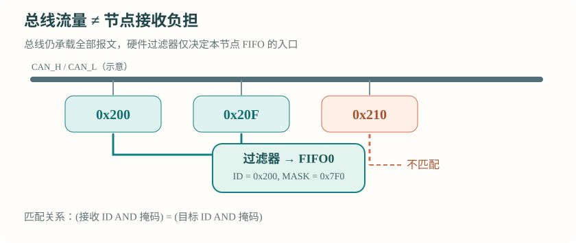

CHAPTER 13 · bxCAN 接收路径
CAN 过滤器：总线上有一百种报文，为什么 MCU 只需要看十种？
总线报文照常广播，接收过滤器却能让 CPU 少处理中断。真正的关键不是“哪个 ID 被挡住”，而是分清 总线传输、硬件匹配、FIFO 入队 三个不同阶段。
核心模型：匹配的是报文标识符和帧类型等位；硬件过滤减少本节点 FIFO/CPU 负担，不会减少物理总线上的流量。
不是“拦住总线”，而是“决定是否写入接收 FIFO”
一个节点发送的 CAN 帧会出现在共享物理总线上。其他节点先在物理层接收，再由各自控制器检查帧，只有符合接收过滤规则的报文才交给软件。过滤器配置错误，可能造成本节点漏收或误收，但不会导致线路上多传输一帧。

一条式子解释 16 个 ID 的白名单
对 11 位标准标识符，以 目标 ID = 0x200、掩码 = 0x7F0 为例。掩码的 1 表示必须一致，0 表示不参与比较；低四位恰好可以变化，因此该规则匹配 0x200–0x20F。
这是位与运算（∧），不是大小比较。想过滤连续区间，必须确认目标 ID 与掩码构成的集合恰好符合需求；掩码并不能表达任何随意指定的数值区间。
Mask = 0 意味着“所有参与比较的位都不关心”，在掩码模式下通常等于全接收，绝不是“全部拒收”。若要拒绝某类帧，应设计不匹配的规则，并核对其他已启用过滤器组；不要建立一个全零掩码组。STM32 bxCAN：ID 之外还要看 IDE、RTR
以下只针对 STM32F4 上的 bxCAN、32 位掩码模式、标准数据帧。FDCAN、S32K FlexCAN、其他 STM32 系列的过滤器组织和寄存器格式并不相同。对 bxCAN 的 32 位布局，标准 ID 占高位字段，StdId << 5 放入高 16 位；IDE 与 RTR 在低 16 位中有各自比较位。
| 字段 | 匹配目标 | 掩码意图 |
|---|---|---|
| STDID[10:0] | 0x200 | 0x7F0：只忽略低 4 位 |
| IDE | 0（标准帧） | 必须一致 |
| RTR | 0（数据帧） | 必须一致 |
| 过滤器输出 | FIFO0 | 匹配后入 FIFO，软件仍需及时读取 |
/* STM32F4 bxCAN / HAL 示例：仅接收 0x200..0x20F 的标准数据帧。
* 前提：hcan1 已初始化；本例为 32-bit IDMASK 模式。 */
CAN_FilterTypeDef f = {0};
f.FilterBank = 0;
f.FilterMode = CAN_FILTERMODE_IDMASK;
f.FilterScale = CAN_FILTERSCALE_32BIT;
f.FilterIdHigh = (uint16_t)(0x200U << 5);
f.FilterIdLow = 0x0000U; /* IDE=0, RTR=0 */
f.FilterMaskIdHigh = (uint16_t)(0x7F0U << 5);
f.FilterMaskIdLow = 0x0006U; /* 比较 IDE(bit2) 与 RTR(bit1) */
f.FilterFIFOAssignment = CAN_FILTER_FIFO0;
f.FilterActivation = ENABLE;
/* 双 bxCAN 设备要核对 CAN1/CAN2 的银行分界；此值只是示例。 */
f.SlaveStartFilterBank = 14;
if (HAL_CAN_ConfigFilter(&hcan1, &f) != HAL_OK) {
Error_Handler();
}注意：FilterMaskIdLow = 0x0006 使扩展帧和远程帧不会因为 ID 其他位巧合而通过；某些 HAL 版本或器件的成员有所差异，使用前应对照目标芯片参考手册与 HAL 头文件。配置过滤器并不替代 HAL_CAN_Start()、FIFO 读取和中断处理。
列表还是掩码？先统计资源再决定
列表模式适合少量离散 ID；掩码模式适合可用位模式描述的一组 ID。bxCAN 过滤器组可在 16/32 位尺度及列表/掩码模式间配置，容纳数量随模式变化；不能把某颗 STM32 的组数照搬到所有控制器。若 CAN1/CAN2 共享过滤器银行，必须按芯片限制分配，防止其中一侧无可用银行。
边界 ID 会被放行吗？
保持 ID=0x200、MASK=0x7F0、标准数据帧不变，选择不同的接收 ID。可交互结果是上面位运算的确定性计算，不是硬件实测。
过滤器匹配模拟
接收 ID 0x200：通过过滤器，进入指定 FIFO。
把“匹配”与“可靠收包”分别测试
| 输入（标准数据帧） | 位与结果 | 预期 |
|---|---|---|
| 0x1FF | 0x1F0 | 不匹配 |
| 0x200 | 0x200 | 匹配 |
| 0x20F | 0x200 | 匹配 |
| 0x210 | 0x210 | 不匹配 |
- 先用离线模型覆盖上下边界、IDE、RTR 与其他启用的过滤器组。
- 再在真实控制器上记录 FIFO0 入队、溢出标志、ISR 延迟和软件队列丢弃情况。
- 最后用外部 CAN 分析仪核对线路实际出现的全部 ID，避免把“总线有报文”误认为“FIFO 必然有报文”。
记住一条界线：过滤器控制接收路径，不控制总线仲裁或发送者的流量。
参考资料与适用边界
- ST RM0390：STM32F446 bxCAN 过滤器布局与寄存器（核对所用芯片版本与章节）
- ST STM32F469/F479 参考手册：bxCAN 过滤器银行与模式
- ST Community：bxCAN 常规模式与全接收过滤器示例（社区技术文档，并非取代芯片参考手册）
示例代码是特定 HAL 的教学片段，不承诺跨芯片直接编译；交互模拟不等同于总线实测。